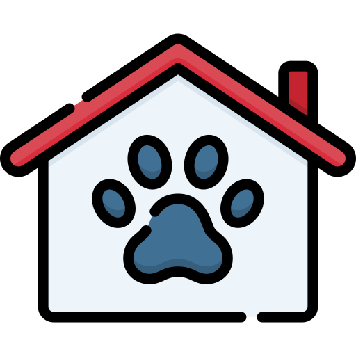

My Projects
Genetic TimeTable Scheduler
Python, Jupyter Notebook

TicTacToe Adversarial Search
Python, Jupyter Notebook

PetPal - Pet Adoption Portal
Java, JavaFX, MySQL

CodeCamp Projects HTML CSS
HTML, CSS, Bootstrap, Tailwind
Shopping Simulator C++
C++, Object Oriented Programming